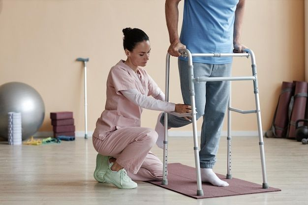
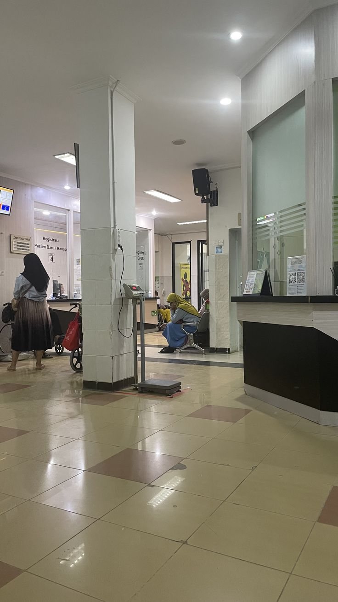

The Science of Longevity: 5 Daily Habits That Add Quality Years to Life
Five grounded habits can support a longer, more active life without requiring a perfect routine.
Ado Care Journal
Clear, practical guidance from our care team to help you make confident choices for yourself and your family.

Five grounded habits can support a longer, more active life without requiring a perfect routine.
.jpg)
Small changes to movement, food, and checkups can create meaningful heart health habits.
Practical ways to notice stress, recover, and find support before your reserves run low.

Make meals, sleep, movement, and honest conversations part of a child’s everyday rhythm.

Recovery is a process. Learn how care plans, patience, and support work together.

A checkup is a useful conversation about staying well and planning for the years ahead.
Spend a few minutes outdoors early in the day to support your body clock and energy.
Stand, stretch, or walk for two minutes whenever you finish a focused block of work.
Keep a consistent bedtime and make your room cool, quiet, and comfortably dark.
Compare packaged foods for salt, added sugar, and fiber before making your choice.
Try four slow breaths before responding to a stressful message or situation.
A bottle within reach makes hydration easier during busy clinic, school, or work days.